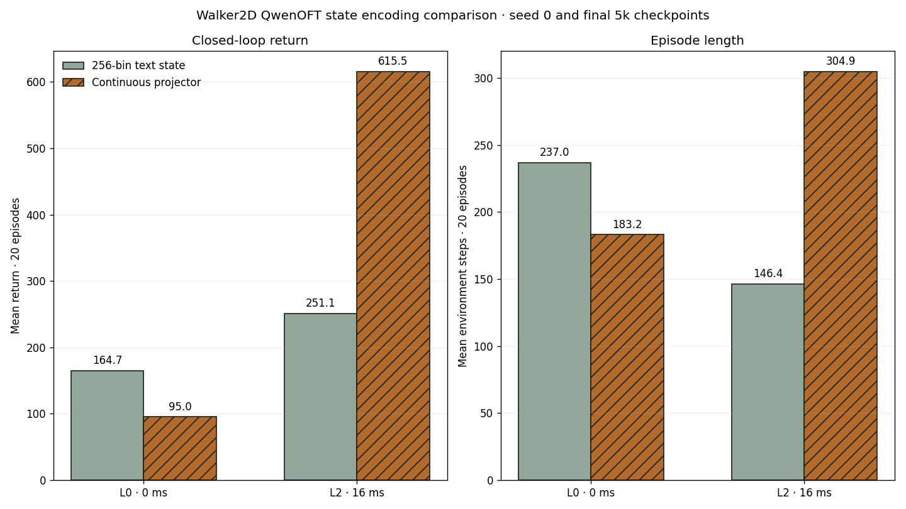
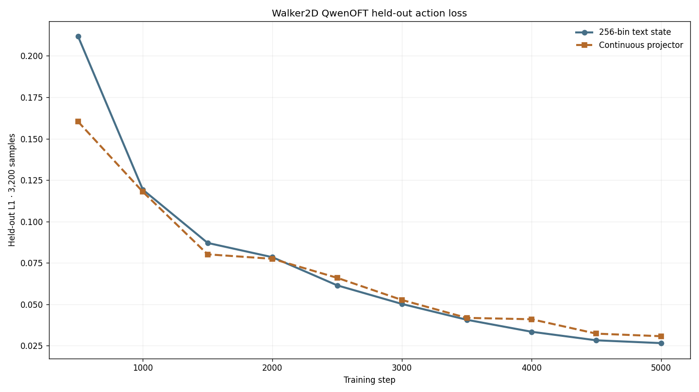

Native Box(6)
The wrapper clips and passes six float32 torques directly to Walker2D.
latency-sensitive-bench / verified release example
Walker2D keeps its native six torques and ordered seventeen-dimensional state end to end. A controlled QwenOFT rerun replaces 256-bin state text with a continuous projector; unlike Hopper, the result is latency-dependent rather than uniformly better.
01 · Outcome
The wrapper clips and passes six float32 torques directly to Walker2D.
The vendored Sample Factory MuJoCo recipe completed 10,006,528 frames and produced best and latest checkpoints.
The original 5k checkpoint reaches 164.741 return at L0 and 251.058 at L2.
The isolated rerun falls to 95.046 at L0 but rises to 615.544 at L2.
02 · Action-space design
Box(-1,1,(6,),float32).03 · Immutable task contract
env:
task_name: walker2d_continuous_torque
env_id: LatencyBench/Walker2dContinuous-v0
action_space:
type: box
labels: [right_thigh, right_leg, right_foot,
left_thigh, left_leg, left_foot]
low: [-1, -1, -1, -1, -1, -1]
high: [ 1, 1, 1, 1, 1, 1]
noop_action: [0, 0, 0, 0, 0, 0]
latency: {method: zero}04 · Contract propagation
Native Box(6) creates a 12-parameter continuous policy head.
Six-value vectors are cloned, delayed, held, and applied directly.
Canonical rows store the actual six torque values.
Conversion and decoding preserve all six dimensions unchanged.
gymnasium_walker2d.pyContinuous task wrapper.
training/gymnasium_sfBox-aware APPO and latency path.
sf_teacher_config.pyContinuous rollout contract.
starvla_lerobot.pyNative six-value StarVLA handoff.
05 · RL verification

MUJOCO_GL=egl python -m training.train \
--config configs/examples/gymnasium/walker2d/small_model_train_sf_official_10m.yamlBest checkpoint: /mnt/checkpoints/latency-sensitive-bench/small_models/walker2d/gymnasium_walker2d_continuous_zero_latency_sf_official_10m/checkpoint_p0/best_000013056_6684672_reward_4212.219.pth.
06 · Closed-loop evaluation
| Latency | ms | Mean return | Std return | Mean length |
|---|---|---|---|---|
| L0 | 0 | 3743.507 | 996.072 | 888.1 |
| L1 | 8 | 93.727 | 6.332 | 70.9 |
| L2 | 16 | 115.681 | 5.698 | 76.0 |
| L3 | 24 | -3.812 | 0.424 | 22.6 |
| L4 | 32 | -7.902 | 0.172 | 18.0 |


07 · Controlled VLA comparison
Both QwenOFT runs use the same teacher data, native six-dimensional action head, L1 objective, batch 16, action horizon 1, 5,000-step budget, seed 42 training configuration, and seed 0 evaluation episodes. The intervention removes the 17-value 256-bin numeric string from the prompt and adds a learned 17 → hidden_dim projection to each action-query embedding.


framework.action_model.loss_type=l1
framework.action_model.state_encoding=continuous_projector
framework.action_model.state_dim=17
framework.action_model.action_dim=6
trainer.max_train_steps=5000
datasets.vla_data.per_device_batch_size=16
trainer.gradient_accumulation_steps=1
MUJOCO_GL=egl PYOPENGL_PLATFORM=egl PYTHONPATH=. \
python -m latency_bench.run \
--config configs/examples/gymnasium/walker2d/starvla_eval.yaml \
--checkpoint-path /mnt/checkpoints/latency-sensitive-bench/openvla_runs/walker2d_rgb_state_l0_return_gt3000_100ep_openvla_native_continuous_projector_sft_5k/checkpoints/steps_5000_pytorch_model.pt \
--model-config-path /mnt/checkpoints/latency-sensitive-bench/openvla_runs/walker2d_rgb_state_l0_return_gt3000_100ep_openvla_native_continuous_projector_sft_5k/config.full.yaml \
--output-dir /mnt/results/latency-sensitive-bench/tasks/walker2d/starvla_eval_continuous_projector08 · Evidence ledger
media builder · loss anchors · 18 focused projector/Walker contract tests passed remotely.
09 · Limits and next stage
See the normative guide and examples index.